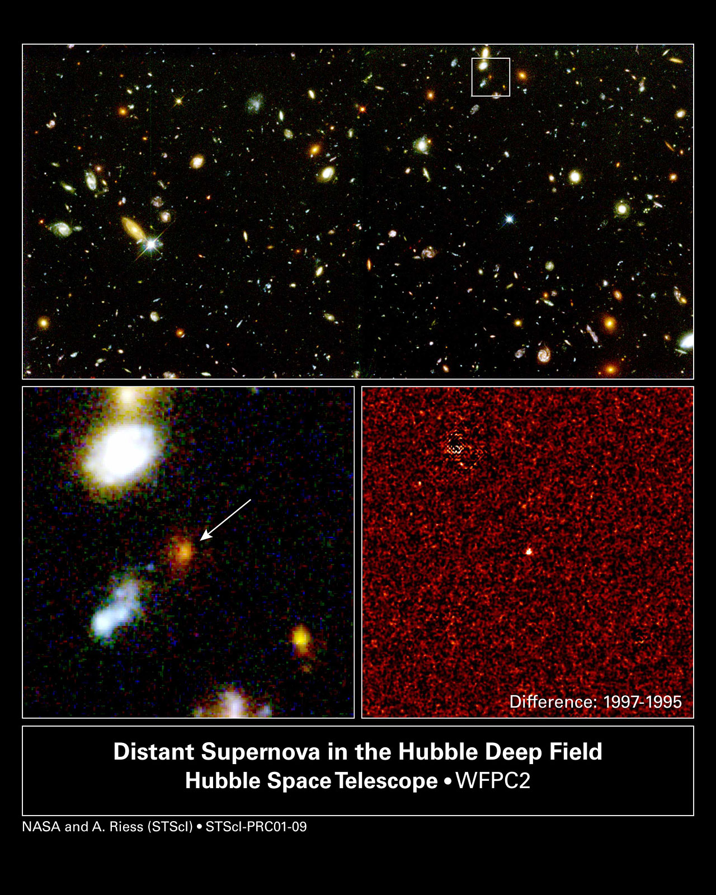

The accelerating universe is the observational discovery that the expansion of the universe is speeding up over time, driven by dark energy. In 1998, two independent research teams—the High-Z Supernova Search Team (led by Brian P. Schmidt and Adam G. Riess) and the Supernova Cosmology Project (headed by Saul Perlmutter)—measured distant Type Ia supernovae to determine how the expansion rate had changed across cosmic time.
Type Ia supernovae are thermonuclear explosions of white dwarfs accreting material from companion stars. These events serve as standard candles because they reach nearly identical peak brightness, providing reliable distance measurements. The teams measured the redshifts and apparent brightness of distant supernovae, expecting to find evidence that cosmic expansion had been slowing due to gravity. Instead, they discovered the opposite: the supernovae were dimmer and farther away than expected for a decelerating universe. The expansion had been accelerating.

NASA/ESA, Adam Riess (STScI)
The data indicate that dark energy—comprising approximately 68 percent of the universe's mass-energy content—possesses negative pressure, causing space itself to expand faster over time. The favored theoretical explanation identifies dark energy with vacuum energy, mathematically represented by Einstein's cosmological constant (Λ). Einstein introduced this term in 1917 but later abandoned it as unnecessary; it was rehabilitated following the 1998 discovery of cosmic acceleration.
The 2011 Nobel Prize in Physics was awarded to Perlmutter, Riess, and Schmidt for this discovery. Under continued acceleration, the universe will expand indefinitely, eventually cooling to near absolute zero—a scenario called the "Big Freeze." Ongoing observations using cosmic microwave background measurements and large-scale galaxy surveys continue constraining dark energy's properties.